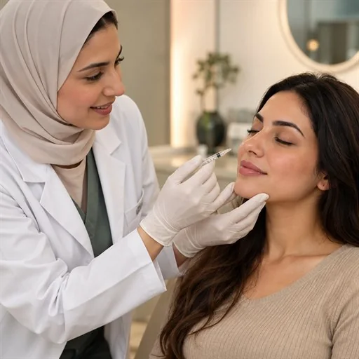
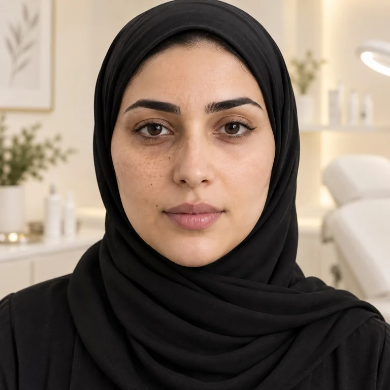
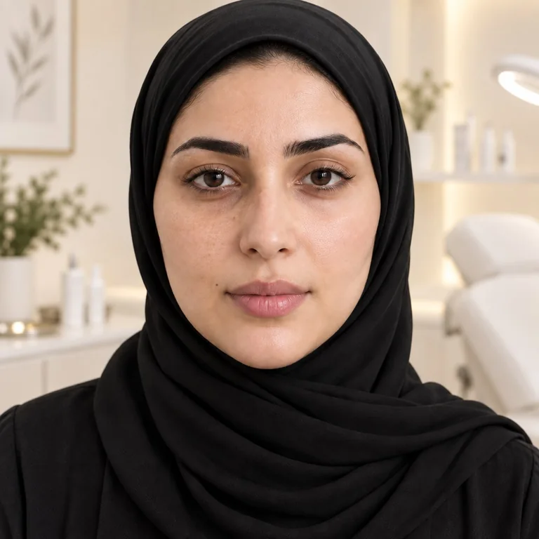
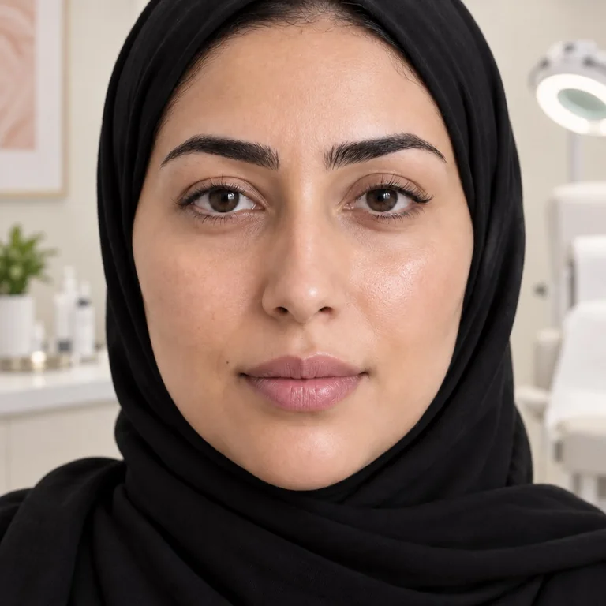
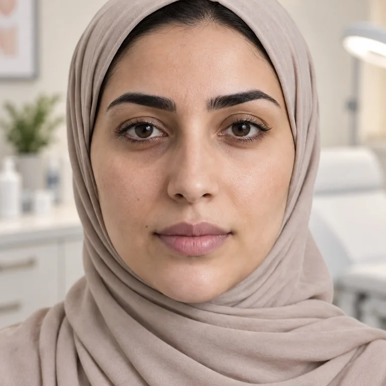
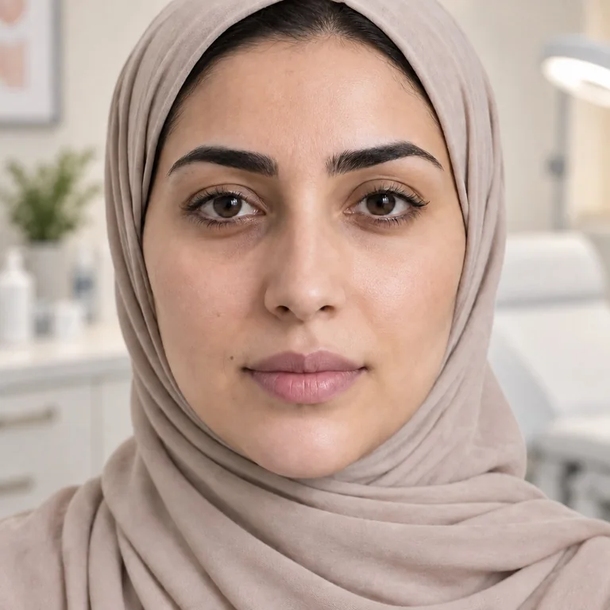
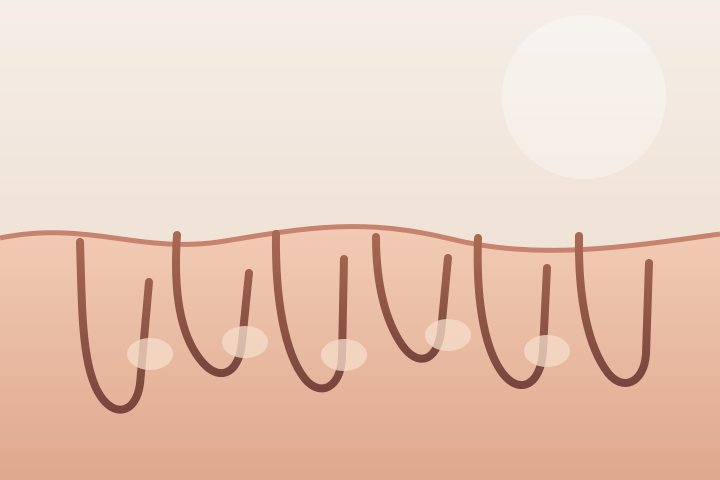
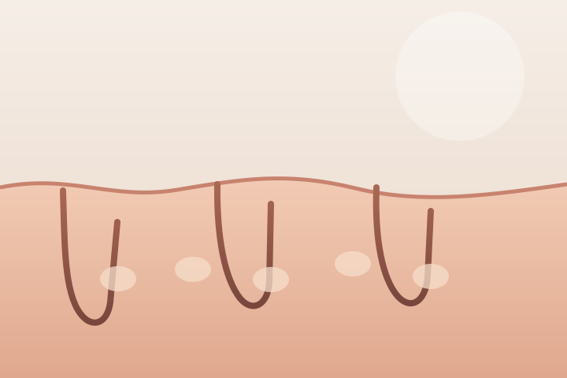

عناية هادئة، تبدأ بالإنصات
افهمي بشرتكِ
قبل أن تختاري عنايتها
مساحة تمنحكِ وقتًا لفهم احتياج بشرتكِ، والتعرّف إلى الخيارات المتاحة بوضوح ومن دون استعجال.
استماع لاحتياجكِ
خيارات مشروحة
مساحة لقراركِ

كما تحبينه
خطوة أولى بلا استعجال
نبدأ من سؤالكِ،
لا من افتراضاتنا
اكتبي المجال الذي يهمكِ وحددي تاريخًا مفضلًا. هذه معاينة للتصميم فقط؛ ستظهر لكِ رسالة محلية ولن يُرسل أي طلب.
- ابدئي بسؤال أو مجال يهمكِ
- تعرّفي إلى الخطوات قبل اتخاذ القرار
- بيانات النموذج لا تُرسل ولا تُحفظ
لا توجد بشرة تشبه الأخرى
نبدأ باحتياجكِ نشرح الخيارات ونحترم قراركِ
خيارات تبدأ من الاستشارة
مسارات عناية لبشرتكِ
تعرّفي إلى مجالات العناية المتاحة، ثم ناقشي مع المختص ما يلائم احتياجكِ وتوقعاتكِ.




منهج يبدأ بكِ
لماذا تختارين
LAURA CLINIC؟
نهتم بالتجربة كاملة؛ من فهم احتياج البشرة إلى شرح الخيارات والمتابعة، مع مساحة واضحة لأسئلتكِ وقراركِ.
- استماع قبل الاقتراح
- شرح واضح للخيارات
- وقت كافٍ لأسئلتكِ
- قرار يناسبكِ أنتِ
تجربة مبنية على الوضوح
لا وعود جاهزة،
بل خيارات مفهومة
لكِ الحق في معرفة ما يمكن توقعه، وما لا يمكن ضمانه، وما إذا كان الإجراء مناسبًا لكِ أصلًا.
اسألي عمّا يشغلكِخطوات واضحة، من البداية
رحلتكِ تبدأ بالإنصات
بدل الوعود الجاهزة، نوضح لكِ ما يحدث في كل خطوة لتختاري وأنتِ مطمئنة.
نسمع ما يشغلكِ
نبدأ بأسئلتكِ وهدفكِ من الزيارة، ونمنحكِ وقتًا لتشرحي ما تبحثين عنه.
نفهم احتياج بشرتكِ
تُناقش حالتكِ مع مختص مؤهل قبل استعراض الخيارات الملائمة لكِ.
تقررين بوضوح
تتعرّفين إلى الخطوات المتوقعة وحدود الخيارات، ويظل القرار لكِ.

الخبرة الطبية تبدأ بالإنصات
تقييم واضح، وخيارات مفهومة
يساعد التقييم الطبي على فهم احتياج البشرة ومناقشة البدائل والتوقعات قبل اختيار أي إجراء.
لكِ الحق في معرفة خطوات العناية وفوائدها وحدودها، وطرح كل ما يشغلكِ قبل اتخاذ القرار.
- استشارات متخصصة
- خطط متابعة
- عناية فردية
- شرح الفوائد والبدائل
متابعة تراعي اختلاف كل بشرة
نتائج العناية تبدأ بخطة مناسبة لبشرتكِ
تابعي التغيّرات في مظهر البشرة عبر مراحل العناية المختلفة، مع الأخذ في الاعتبار أن الاستجابة تختلف من شخص لآخر حسب الحالة والخطة المستخدمة.
صور توضيحية لأغراض العرض فقط — لا تمثل حالات أو نتائج علاجية حقيقية.
التصبغات وتفاوت اللون
متابعة تحسن مظهر البقع وتجانس لون البشرة.


قبلبعدنضارة البشرة
متابعة الترطيب والحيوية والمظهر العام للبشرة.

قبلبعدملمس البشرة وآثار الحبوب
متابعة تحسن الملمس ومظهر الآثار تدريجيًا.


قبلبعدإزالة الشعر بالليزر
متابعة انخفاض نمو الشعر بين الجلسات.


قبلبعدالنتائج تختلف من حالة لأخرى، ويحدد المختص الخطة المناسبة بعد التقييم.
تجربة عناية واضحة ومتكاملة
جوانب تهمكِ في تجربة العناية
محاور توضّح ما ينبغي أن تتضمنه تجربة الرعاية، وليست تقييمات أو شهادات من عميلات.
01 / 03
إجابات واضحة قبل الزيارة
الأسئلة الشائعة
كل حالة مختلفة؛ ابدئي باستشارة طبية لفهم الخيارات المناسبة لك.
كيف أعرف الخيار الأنسب لبشرتي؟
ابدئي بتقييم لدى مختص مؤهل؛ تختلف الخيارات باختلاف الحالة ولا يمكن تحديدها من خلال الموقع وحده.
هل كل الخدمات تناسب الجميع؟
لا. الملاءمة تتوقف على تقييم الحالة والتاريخ الصحي ومناقشة الفوائد والمخاطر مع المختص.
هل أحتاج إلى فترة تعافٍ؟
تختلف التعليمات ومدة التعافي باختلاف الإجراء. اسألي المختص عن التوقعات قبل اتخاذ القرار.
هل يمكنني السؤال قبل اختيار خدمة؟
بالتأكيد. فهم الخطوات والبدائل جزء أساسي من اتخاذ قرار يناسب احتياجكِ.
هل يرسل نموذج الاستشارة بياناتي؟
لا. هذه معاينة تصميم فقط؛ النموذج يعرض رسالة داخل الصفحة ولا يرسل البيانات أو يحفظها.
هل يمكنني تأكيد موعد من هذه الصفحة؟
لا. لا يوجد حجز فعلي في هذه النسخة. يلزم ربط النموذج بوسيلة تواصل معتمدة قبل إطلاق الموقع.
ابدئي بسؤال واحد
اختاري العناية على مهل، وبمعلومات أوضح
استكشفي نموذج الاستشارة التوضيحي؛ لن تُرسل أي بيانات.